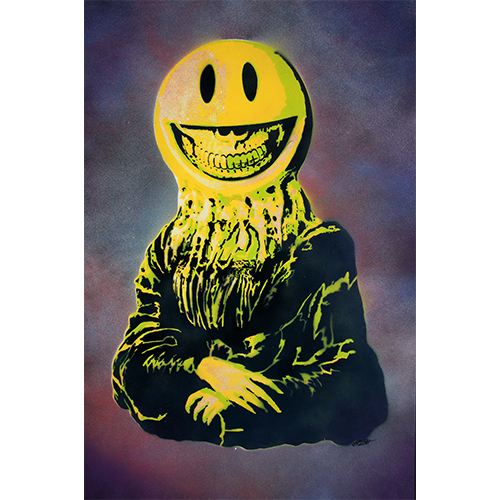
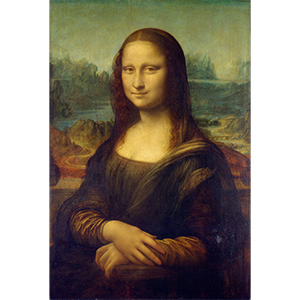

Mona Lisa Grin Stencil 2
Home
1970s
1980s
1990s
2000s
2010s
2020s
← Return to 2025

Title:
Mona Lisa Grin Stencil 2
Date:
2025
Medium:
Spray paint on paper
Dimensions:
24 × 36 inches
Work ID:
RE-001712
Signature / marks:
None observed.
Notes
This work references Leonardo da Vinci’s
Mona Lisa
.
Ancillary Documentation

Leonardo da Vinci reference image.
Leonardo da Vinci,
Mona Lisa
, c. 1503–1506. Public domain reference image retained as supporting documentation for the visual/art-historical reference cited in this work.